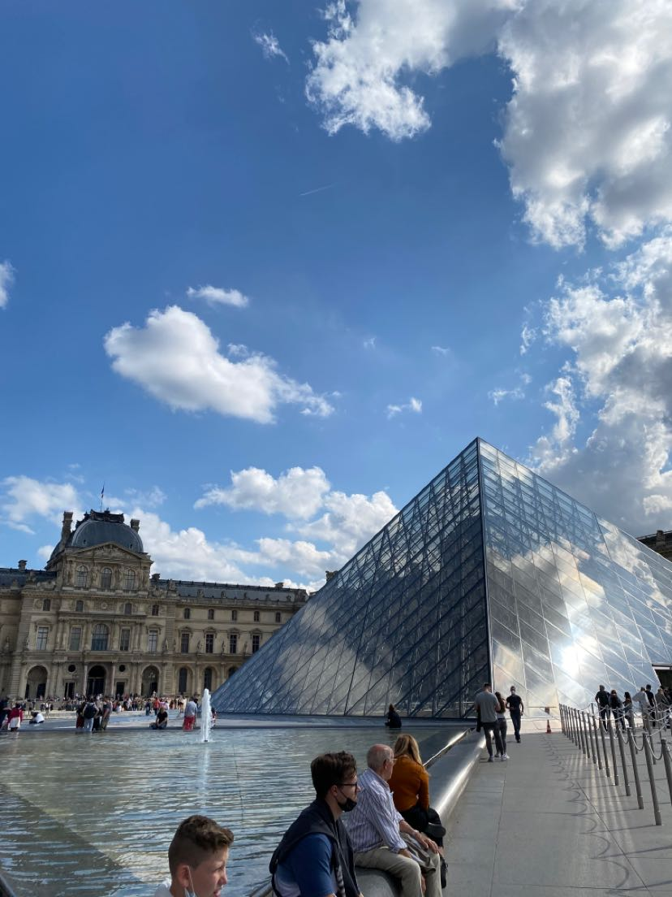
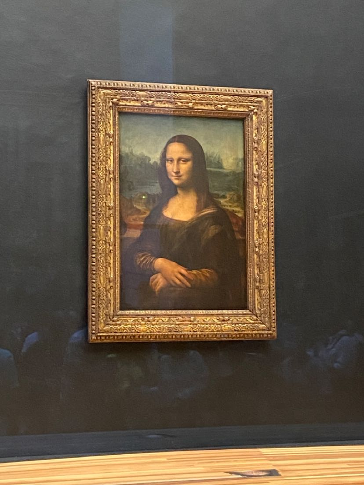
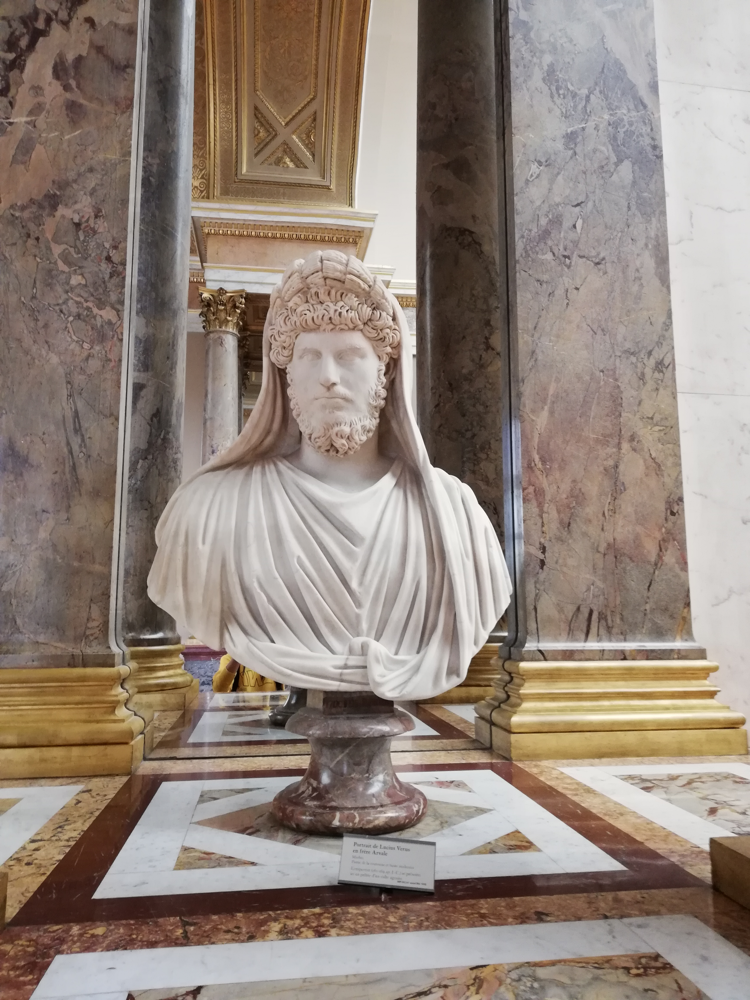
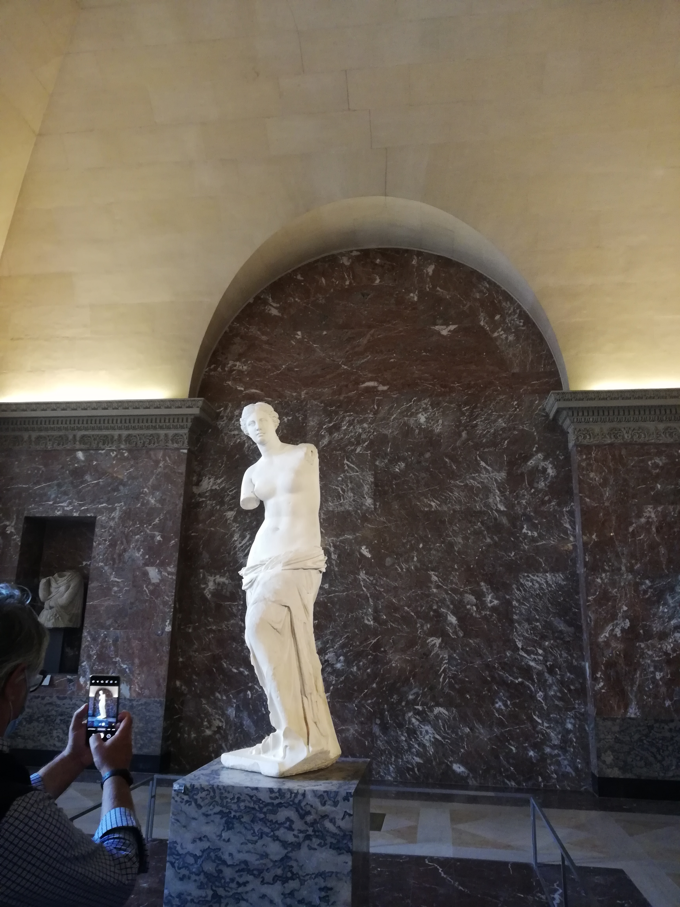
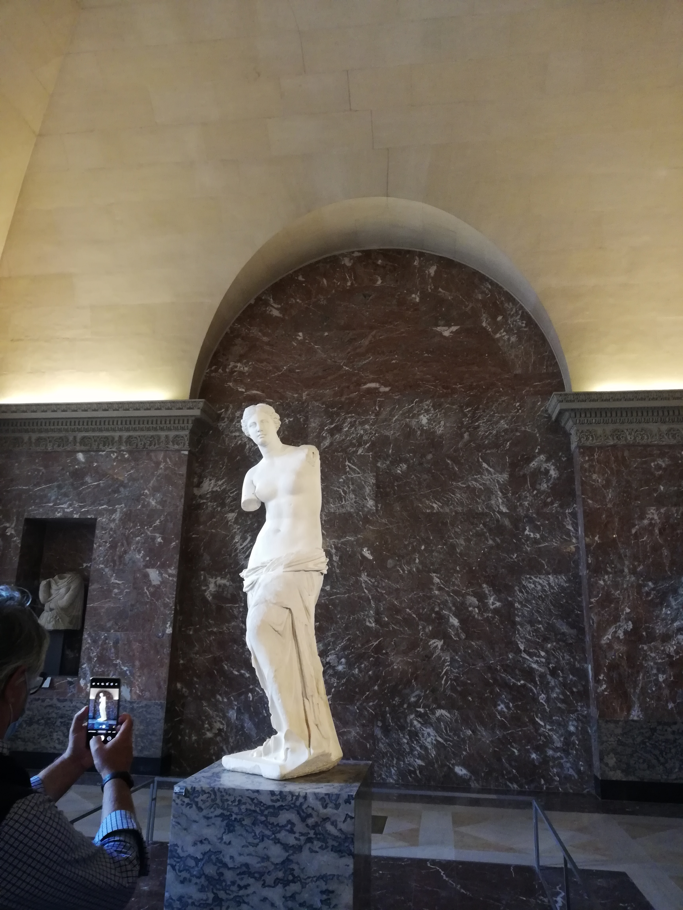
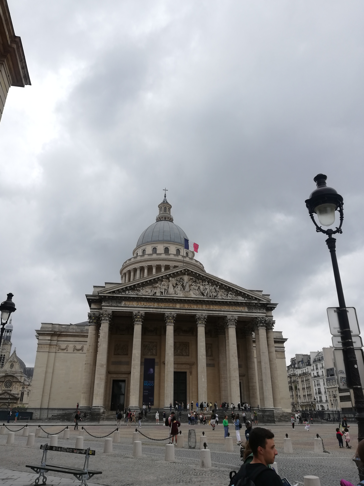
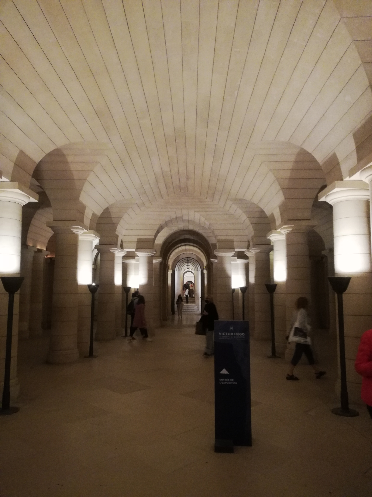
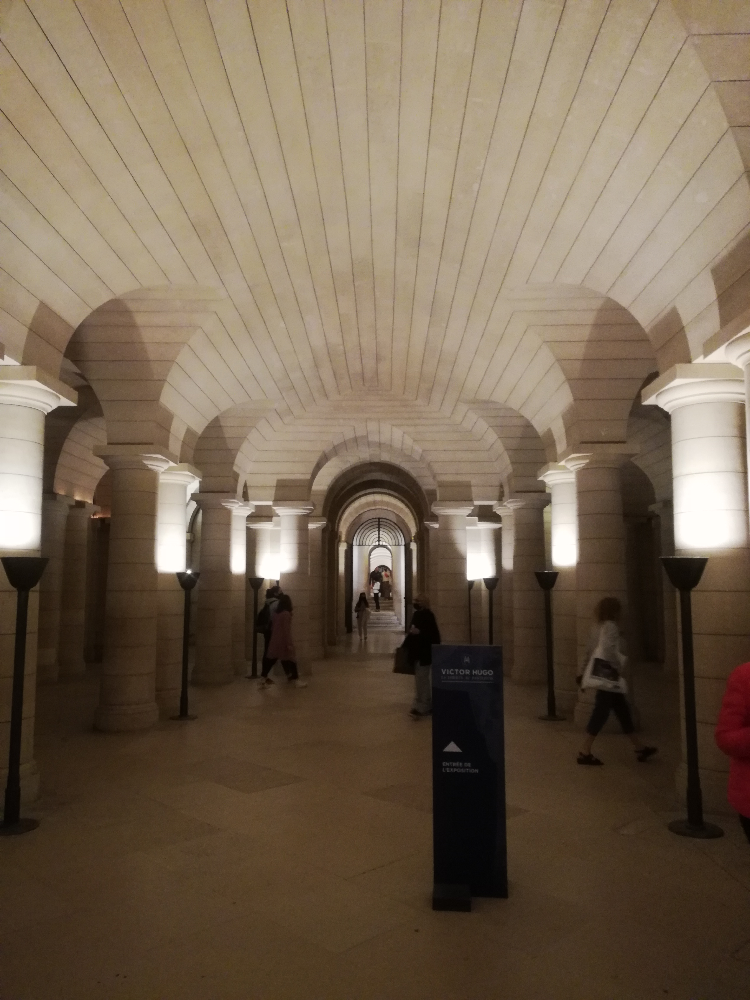
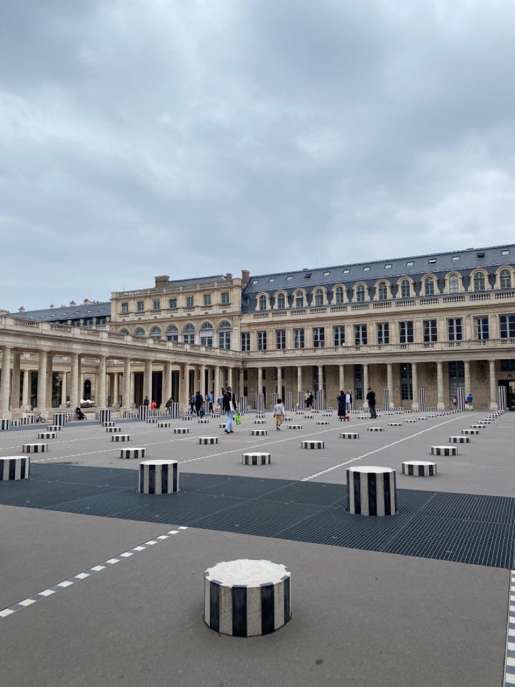
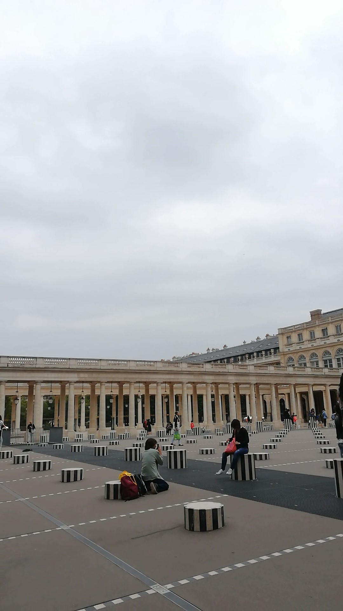

- Le Louvre -
 
 

Le musée le plus connu mondialement est incontestablement Le Louvre.
L'ancien palais royale datant du XIIème siècle, agrandit par
les différents rois de France, est un musée depuis 1793 et
est aujourd'hui le plus visités au monde avec plus de
10 millions de visiteurs chaque années! Le louvre acceuille des
expositions d'oeuvres de toutes les civilations qui nous ont
précédées et on y trouve les plus célèbres tel que la Joconde de
Léonard de Vinci ou la Vénus de Milo.
- Panthéon -
 

Visible depuis les jardins du Luxembourg, le Panthéon de Paris est un batiment inspiré du modèle romain et achevé en 1790. De nos jours, il abrite de nombreuses personnalités importantes et inhumées de l'Histoire de France tel que Voltaire, Victor Hugo, Emile Zola ou encore Marie Curie et Simone Veil. A l'intérieur on y trouve le pendule de Foucault, ayant servit à démontrer la rotation de la Terre, mais aussi différentes peintures et statues.
- Colonnes de Buren -
 Lorsque l'on se rend dans la cour du Palais-Royal, à Paris, on y voit une grande oeuvre d'art composée de colonnes noires et blanches en marbre. Celle-ci a été réalisée par Daniel Burren et contraste avec le style plus classique du Palais-Royal de par sa modernité.
Retour au Menu
Jour précédent : Jour 2
Jour suivant : Jour 4
Me contacter: noelangevin72@gmail.com